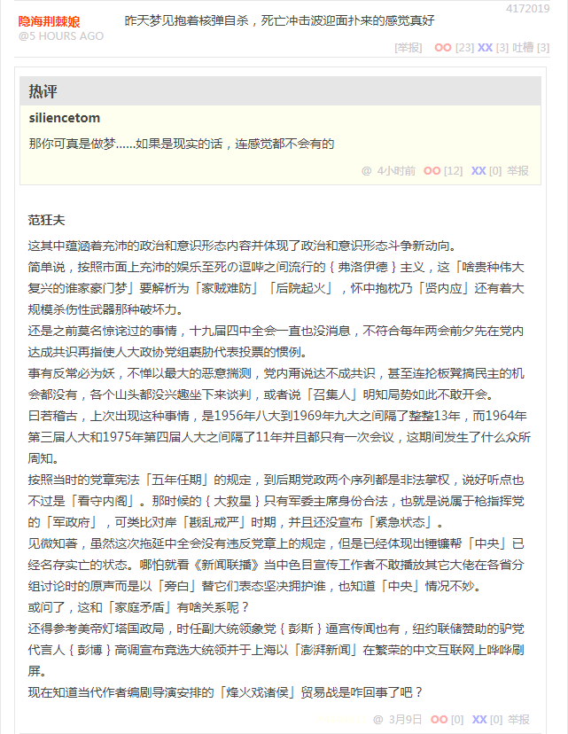

段子 4172019
昨天梦见抱着核弹自杀，死亡冲击波迎面扑来的感觉真好
那你可真是做梦……如果是现实的话，连感觉都不会有的
这其中蕴涵着充沛的政治和意识形态内容并体现了政治和意识形态斗争新动向。
简单说，按照市面上充沛的娱乐至死の逗哔之间流行的弗洛伊德主义，这「啥贵种伟大复兴的谁家豪门梦」要解析为「家贼难防」「后院起火」，怀中抱枕乃「贤内应」还有着大规模杀伤性武器那种破坏力。
还是之前莫名惊诧过的事情，十九届四中全会一直也没消息，不符合每年两会前夕先在党内达成共识再指使人大政协党组裹胁代表投票的惯例。
事有反常必为妖，不惮以最大的恶意揣测，党内甭说达不成共识，甚至连抡板凳搞民主的机会都没有，各个山头都没兴趣坐下来谈判，或者说「召集人」明知局势如此不敢开会。
曰若稽古，上次出现这种事情，是1956年八大到1969年九大之间隔了整整13年，而1964年第三届人大和1975年第四届人大之间隔了11年并且都只有一次会议，这期间发生了什么众所周知。
按照当时的党章宪法「五年任期」的规定，到后期党政两个序列都是非法掌权，说好听点也不过是「看守内阁」。那时候的大救星只有军委主席身份合法，也就是说属于枪指挥党的「军政府」，可类比对岸「戡乱戒严」时期，并且还没宣布「紧急状态」。
见微知著，虽然这次拖延中全会没有违反党章上的规定，但是已经体现出锤镰帮「中央」已经名存实亡的状态。哪怕就看《新闻联播》当中色目宣传工作者不敢播放其它大佬在各省分组讨论时的原声而是以「旁白」替它们表态坚决拥护谁，也知道「中央」情况不妙。
或问了，这和「家庭矛盾」有啥关系呢？
还得参考美帝灯塔国政局，时任副大统领象党彭斯逼宫传闻也有，纽约联储赞助的驴党代言人彭博高调宣布竞选大统领并于上海以「澎湃新闻」在繁荣的中文互联网上哗哗刷屏。
现在知道当代作者编剧导演安排的「烽火戏诸侯」贸易战是咋回事了吧？
补充
先说字面意义上的「烽火戏诸侯」，严肃的历史分析认为，那是周幽王「下半身决定上半身」与「家务事决定公务事」之间的矛盾，坚决把第二任王后褒姒生出来的「贵种」（以原配视角统称「贱种」）册封为钦定接班人，并昭告天下「从小比人聪明还比人努力的神童龙裔」（死时八岁），于是老丈人申侯引「狼」（犬戎）入室并将推算时年尚未超过二十八岁而退团的青年才俊「贵人」（以原配视角统称「贱人」）作为报酬，扶持外孙子另立门户登基为周平王。
这个典故，也是后来「道门」所扶持的「粪坑女神」紫姑来历当中的一条，参考《『煎蛋素材合集』粪坑女神》。
而在娱乐至死の逗哔之间流行的符合文艺理论但不符合历史事实的解释，那就是周幽王就任董事长之后自我膨胀把「普天之下莫非王土，率土之滨莫非王臣」写入党章宪法，并叫嚣「宁可我负天下人，不可天下人负我」，而在实践中坚持「以天下奉一人」的原则，异姓股东均视为畜牲，即便其它同姓股东也不过是奴才，经常以「召之即来挥之即去」手段考验「四个意识」「两个维护」，并美其名曰「朕即国家我就是大局你们要顾全大局」，然后玩脱了。
这个动向，在两会以来就体现在知乎首页经常于今日头条位置醒目应景推荐的《你见过哪些公司因为老板作死导致倒闭的？》问题当中，按照捅妓上的相关性判断，大约每两次刷新就会出现一次在今日头条，另外一次也会出现在随后位置。
如果仅从这个角度观察，还有个典故，就是在文艺界当中以「更能作空梁落燕泥否」名言著称的隋炀帝杨广，据称在乘坐「水师一号」龙舟视察扬州途中，一时兴起斩断纤绳，看着岸边替自己卖命的打工仔纷纷「以头抢地」而龙颜大悦，然后「十八家反王七十二路烟尘」就横空出世了也，忙坏了得意门生兼忠实走狗张须陀。